💀PROBABILITY💀
07 - The Bridge of Death
Ajay Kumar Koli
Objectives:
Probability
Classical
Empirical
Probability & frequency distributions
Probability density functions
Probability and the normal distribution
The probability of a score greater than x
Conditional probability
JIGSAW
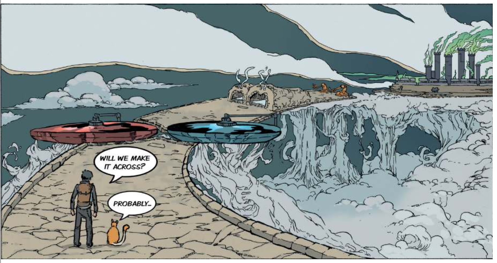PROBABILITY
Probability
Classical / Theoretical Probability
Empirical Probability
Key Concepts in Probability
Experiment
Outcome
Sample space
Trial
Random Sample
Sampling with replacement
Sampling without replacement
Event
Probability Theory
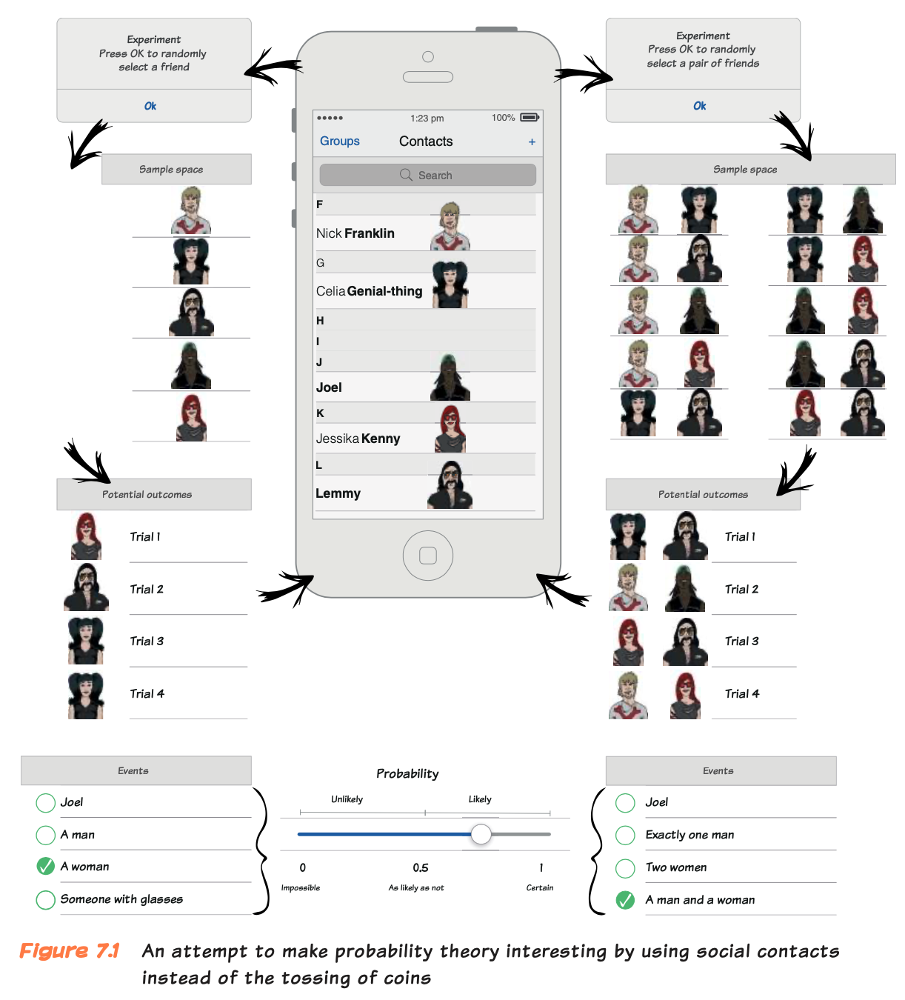Friends
Imagine you have total five friends
Select one of these friends. Each selection is known as experiment.
Experiment “refers to any procedure that can be repeated and that has a well-defined outcome or set of outcomes.”
The complete set of possible outcomes is known as the sample space.
A particular instance of the experiment is known as a trial.
Friends
Random sample: “means that each of the five contacts in your phone has an equal chance of being selected”
Sampling with replacement: the name that has been selected or “sampled” is replaced back into the sample space.
Sampling without replacement: once an item is selected or “sampled” it is not put back into the sample space and it cannot be selected on a subsequent trial.
Friends
Events: An event is an outcome or set of outcomes of an experiment, and it is something to which we can assign a probability
An event can be any outcome that interests you.
Single outcome, selecting Joel
A set of outcomes, selecting a woman, man with glasses, no hair, dark hair.
Classical Probability
In classical probability, if we assume that every outcome is equally likely then the probability of an event is the frequency with which that event occurs divided by the total number of possible outcomes (the sample space).
\[ P(x)=\frac{frequency(x)}{sample\;space}=\frac{f(x)}{sample\;space} \]
Selecting Joel is your Event
\[ P(Joel)=\frac{f(Joel)}{sample\;space}=\frac{1}{5}=0.2 \]
- A probability value is a proportion, convert them into percentages by multiplying them by 100.
Probability Interpretation
Probability as a scale that ranges from 0 to 1.
A probability of 0 means that an event is impossible, and
A probability of 1 means that an event is certain
A probability of 0.5 means that an event is just as likely to happen as it is to not happen.
Probability Interpretation
A probability between 0.5 to 1 means that an event is more likely to happen than not, and the closer to 1 it gets, the more likely it is to happen.
A probability between 0 and 0.5 means that an event is more unlikely to happen than to happen, and the closer to 0 it gets, the less likely it is to happen.
Selecting a Woman is your Event
\[ P(woman)=\frac{f(woman)}{sample\;space}=\frac{2}{5}=0.4 \]
YOUR TURN 🧠
What would be the probability of
selecting a male
selecting a bald person
selecting someone with glasses
Bernoulli Trail
- An experiment or trial that has only two outcomes is known as a Bernoulli trail.
- It assumes that each outcome is equally likely.
Classical Probability
The classical probability of an outcome is the theoretical frequency of that outcome divided by the total number of possible outcomes (the sample space).
\[ P(x)=\frac{frequency(x)}{sample\;space}=\frac{f(x)}{sample\;space} \]
Empirical Probability
The empirical probability of an outcome is the observed frequency of that outcome divided by the total number of observed outcomes (the sample space).
It is same as the relative frequency.
\[ relative\;frequency=\frac{frequency\;of\;outcome}{total\;number\;of\;outcomes}=\frac{f}{N} \]
Empirical Probability
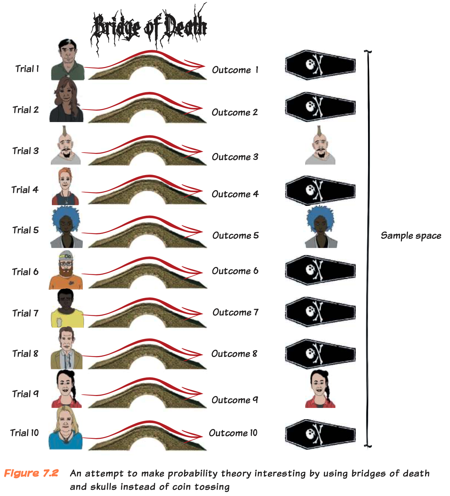Empirical Probability
\[ empirical\;p(x)=\frac{frequency(x)}{sample\;space}=\frac{f}{N} \]
Probability
Probability values vary from 0 (impossible) to 1 (certain), with 0.5 meaning that an event is as likely to happen as it is not to happen. They cannot be negative.
Probabilities are proportions, and so can be multiplied by 100 and expressed as percentages:
0% = impossible to occur,
50% = as likely to occur as not,
100% = certain to occur.
PROBABILITY & FREQUENCY DISTRIBUTIONS
The Discs of Death
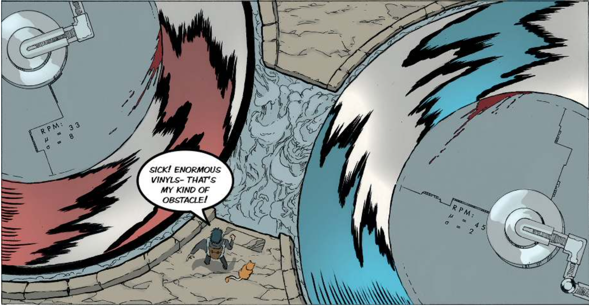The Discs of Death
Red Disc
- RPM: \(\mu=33\), \(\sigma=8\)
Blue Disc
- RPM: \(\mu=45\), \(\sigma=2\)
- Calculate the probability that each of the two discs exceeds a certain speed.
Frequency Distributions
- They tell us about probability.
Frequency Distributions
What is the probability of someone scoring 22?
Frequency Distributions
What if I wanted to know the probability that a score was higher than 22?
💡 The key thing is that this demonstrates that the area of any histogram represents probability.
Put Histogram in Hat
Cut histogram in 100 squares & place in a hat
Probability of 21 green squares.
- Probability that the score is higher than the 22.
Probability of 1 red square.
- Probability that one 22 score.
Probability of 78 blue squares.
- Probability that the score is lower than 22.
What if there are not 100 squares? 🤔
Probability Density Functions:
Idealized Versions of Histograms using whole scores and potential scores
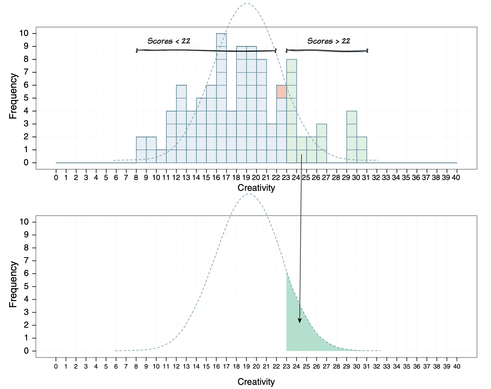Probability Density Functions
The area under the curve represents probability which is equal to 1 or the probability of all scores summed together is 1.
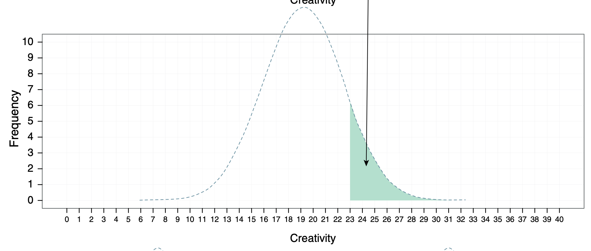Probability Density Functions
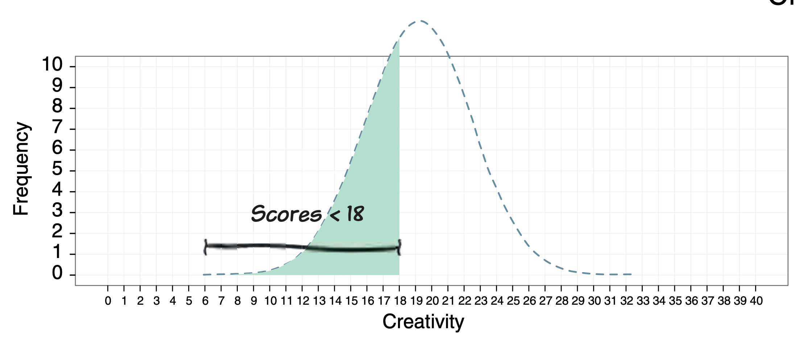Probability Density Functions
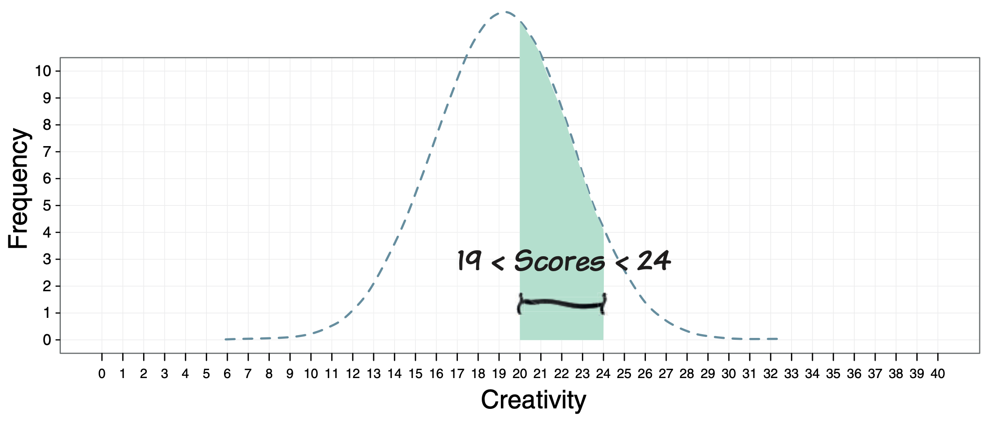Probability and the Normal Distribution
Standard Normal Distribution has mean 0 and standard deviation 1.
If we think that the distribution is normal then we can convert any distribution of raw scores into \(z\)-scores.
Areas under Standard Normal Distribution
Normal Distribution
Probability density function
Standard Normal Distribution
Area under it equal a probability of 1
We can start to think about how different areas translate into different probabilities.
Areas under Standard Normal Distribution
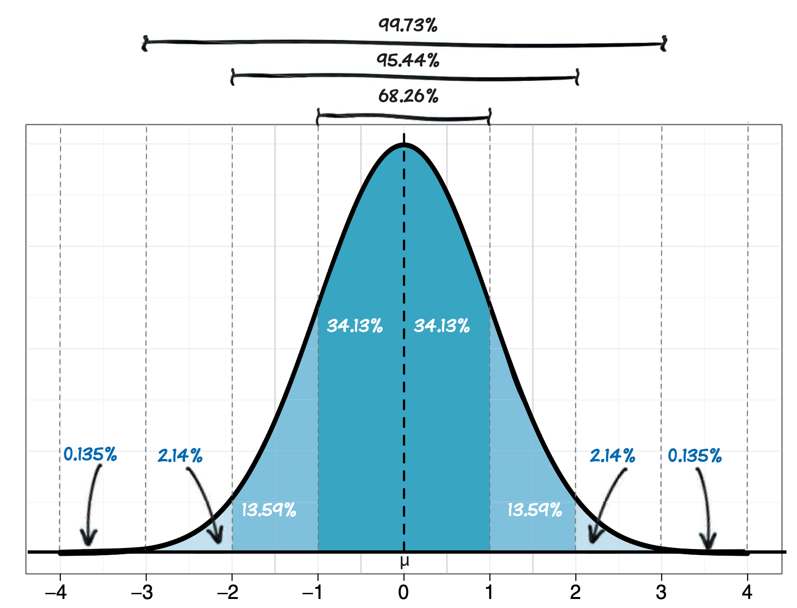What is the probability that if we pick a random score it will fall within one standard deviation above the mean?
What is the probability that if we pick a random score it will fall within one standard deviation of the mean?
z-scores of +1
\(34.13\%\)
There is a .3413 probability of a score falling within a standard deviation of the mean
What is the probability that if we pick a random score it will fall within one standard deviation of the mean?
What is the probability that if we pick a random score it will fall within one standard deviation of the mean?
z-scores of -1 and +1
\(34.13\%\;+34.13\%=68.26\%\)
- There is a .6826 probability of a score falling within a standard deviation of the mean
What is the probability that if we pick a random score it will fall within 2 standard deviations of the mean?
Z-scores of -2 and +2
\(13.59\%+34.13\%\;+34.13\%+13.59\%=95.44\%\)
- There is a 95.44% probability of a score falling within 2 standard deviations of the mean
What is the probability that if we pick a random score it will fall within 3 standard deviations of the mean?
Standard Normal Distribution
68% of scores fall within 1 standard deviation above or below of the mean
95% between two standard deviations,
99% between three standard deviations.
Standard Normal Distribution
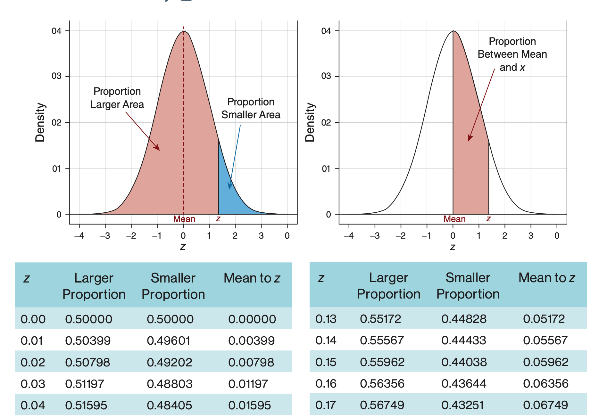Table of Standard Normal Distribution

The Discs of Death
Red Disc
- RPM: \(\mu=33\), \(\sigma=8\)
Blue Disc
- RPM: \(\mu=45\), \(\sigma=2\)
- Calculate the probability that each of the two discs exceeds a certain speed.
- Provided we convert the score into a z-score.
The Discs of Death
Red Disc
- RPM: \(\mu=33\), \(\sigma=8\)
- \[ z=\frac{X-\mu}{\sigma}\\=\frac{50-33}{8}=2.13 \]
Blue Disc
- RPM: \(\mu=45\), \(\sigma=2\)
- \[ z=\frac{X-\mu}{\sigma}\\=\frac{50-45}{8}=2.50 \]
The Probability of a Score greater than x
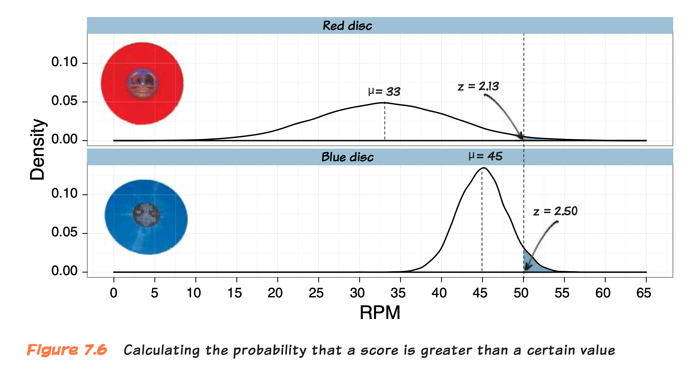The Discs of Death
Red Disc
- RPM: \(\mu=33\), \(\sigma=8\)
- z = 2.13
- 0.01659
- 1.66%
Blue Disc
- RPM: \(\mu=45\), \(\sigma=2\)
- z = 2.50
- 0.00621
- 0.62%
The Probability of a Score Less Than X: The Tunnels of Death
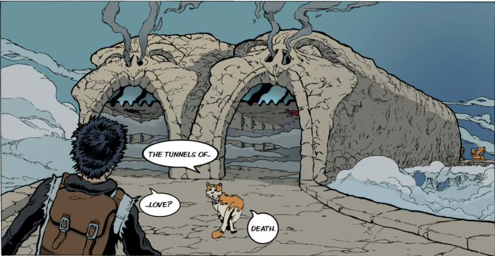Zach can run 5 metres
Left Tunnel
- Average length: \(\mu=4.5\), \(\sigma=1.5\)
Right Tunnel
- RPM: \(\mu=4\), \(\sigma=1\)
The Tunnels of Death
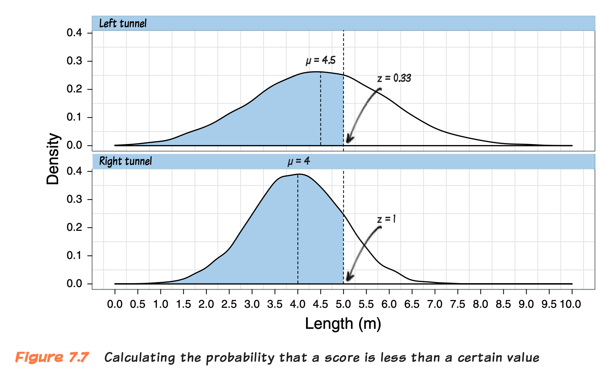Zach can run 5 metres
Left Tunnel
- Average length: \(\mu=4.5\), \(\sigma=1.5\)
- z = 0.33
- 0.62930
- 63%
Right Tunnel
- RPM: \(\mu=4\), \(\sigma=1\)
- z = 1
- 0.84134
- 84%
The Probability of a Score between Two Values: The Catapults of Death
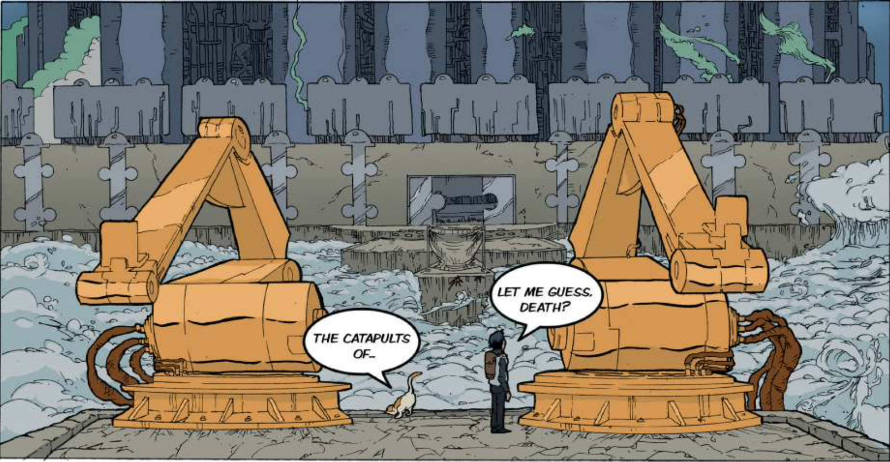The Catapults of Death
Left Catapult
- Shot distance: \(\mu=103\) \(\sigma=2\)
Right Catapult
- Shot distance: \(\mu=97\) \(\sigma=5\)
Distance to the net is 100 meters and the net itself is 5 metres wide.
Zach and Milton need a catapult that will throw them between 100 and 105 metres.
The Catapults of Death
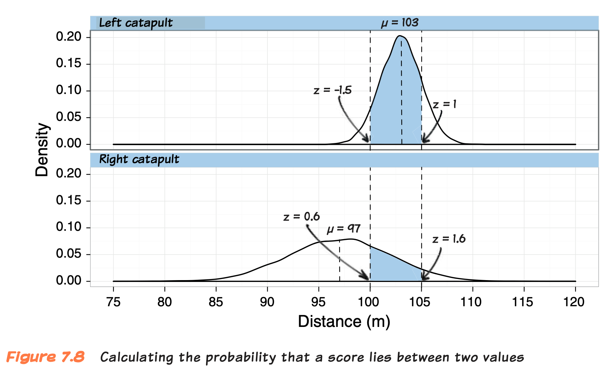The Catapults of Death
Left Catapult
Shot distance: \(\mu=103\) \(\sigma=2\)
z = -1.5 and z = 1
Right Catapult
Shot distance: \(\mu=97\) \(\sigma=5\)
z = 0.6 and z = 1.6
Left Catapult
For 100 meter
\[ z=\frac{X-\mu}{\sigma}=\frac{100-103}{2}=-1.5 \]
For 105 meter
\[ z=\frac{X-\mu}{\sigma}=\frac{105-103}{2}=1 \]
Right Catapult
For 100 meter
\[ z=\frac{X-\mu}{\sigma}=\frac{100-97}{5}=0.6 \]
For 105 meter
\[ z=\frac{X-\mu}{\sigma}=\frac{105-97}{5}=1.6 \]
Probability of a score between two values
Left Catapult
- \(1-0.067-0.159\\=0.774\\=77.4\%\)
Right Catapult
- \(1-0.72575-0.05480\\=0.219\\=21.9\%\)
CONDITIONAL PROBABILITY
Deathscotch
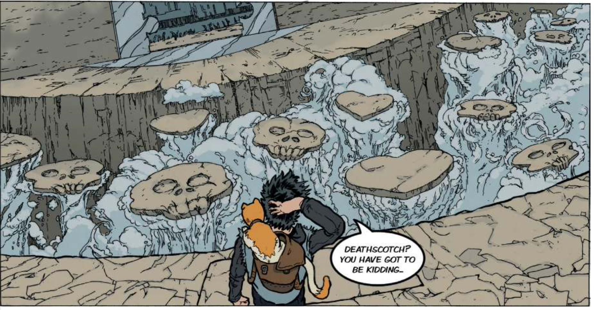Contingency Table
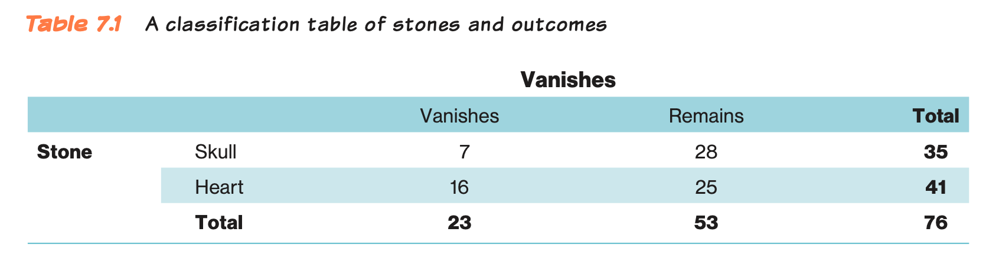What is the probability that you would land on a skull?
- 35/76 = 0.46 = 46%
Contingency Table
What is the probability that you would land on a heart?
- 41/76 = 0.54 = 54%
Contingency Table
What would be the probability of landing on both a skull and a heart?
- Zero, as that would be impossible, you can land on one stone.
Mutually Exclusive/Disjoint Outcomes
Because they cannot co-occur. You cannot land on both a heart and a skull.
\(\cap\) means “and”
The probability of A and B happening is 0.
p(skull and heart) = 0 or
p(skull \(\cap\) heart) = 0
The probability of two events both occurring is known as the probability of the intersection.
Mutually Exclusive Outcomes
When you have mutually exclusive outcomes, you can work out the probability that one outcome or another happens, known as the union.
\(\cup\) means “or”
A or B happening is the sum of their individual probabilities.
\(p(A\;\cup\;B)=p(A)+p(B)\) which is 1
\(p(skull\;\cup\;heart)=p(skull)+p(heart)\)
\(p(skull\;\cup\;heart\;\cup\;p(death))\\=p(skull)+p(heart)+p(death)\)
Conditional Probability 💀
\[ p(vanish|skull)=\frac{f(vanishing\;skulls)}{f(skulls)}=\frac{7}{35}=0.2 \]
Conditional Probability ❤️
\[ p(vanish|heart)=\frac{f(vanishing\;hearts)}{f(hearts)}=\frac{16}{41}=0.39 \]
At JIGSAW
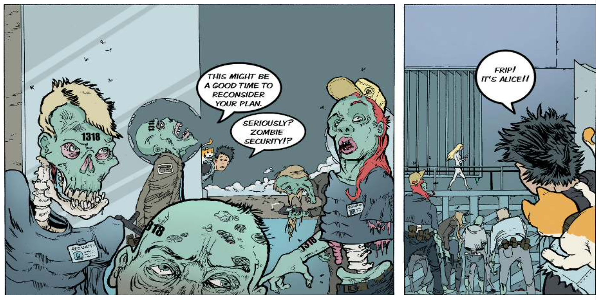